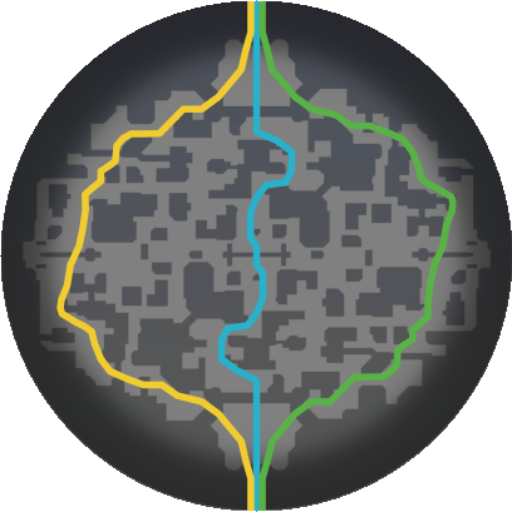

Spielwelt
Die Karte
Gekämpft wird in den Straßen eines okkulten New York: Drei Lanes verbinden die beiden Basen, dazwischen liegen Seitengassen, Dächer, unterirdische Gänge — und eine Handvoll Orte, die jedes Match entscheiden können. Fahre mit der Maus über die Markierungen (oder tippe sie an), um Details und einen vergrößerten Kartenausschnitt zu sehen.

West Mitte Ost15 Orte werden angezeigt.
- Objectives
- Shops
- Urne & Reise
- Basen & Patrone
Die drei Lanes
Seit der großen Kartenüberarbeitung kämpfen beide Teams auf drei Lanes, die von Ziplines gesäumt werden. Jede Lane folgt demselben Aufbau: vorn der Guardian, dahinter der Walker, am Ende die Basis mit Schreinen und Patron. Zwischen den Lanes liegt das Niemandsland aus Gassen, Läden und Camps — wer es kontrolliert, kontrolliert die Rotationen.
Die mittlere Lane ist die kürzeste Verbindung zwischen den Basen und gleichzeitig der schnellste Weg zur Mid-Boss-Grube. Die Außen-Lanes bieten dafür mehr Deckung und direkten Zugang zu Urnen-Route und Läden.
Wichtige Orte im Detail
Der Kuriositätenladen
In den Läden gibst du deine Seelen aus — im Spiel einfach das Shop-Terminal benutzen. Neben den Shops in der eigenen Basis gibt es Läden im Niemandsland (auf der Karte markiert): Sie ersparen dir den Rückweg und halten dich länger auf der Karte. Profis planen ihre Einkäufe um diese Positionen herum.
Die Mid-Boss-Grube
Ab dem Mittelspiel liegt hier das wertvollste neutrale Objective des Spiels. Der Mid-Boss ist zäh und der Kampf laut — rechne immer damit, dass das gegnerische Team den Kampf klaut. Die Belohnung, der Rejuvenator, gewährt dem gesamten Team einen mächtigen, minutenlangen Stärkungseffekt und leitet häufig den entscheidenden Push ein.
Die Urnen-Route
Das Sünderopfer („die Urne“) erscheint regelmäßig am Kartenrand und muss quer über die Karte zum Altar getragen werden. Der Träger ist für alle sichtbar — die Route führt gefährlich nah an der gegnerischen Hälfte vorbei. Als Team eskortiert bringt die Urne einen ordentlichen Seelen-Schub; unbegleitet ist sie eine Einladung zum Gank.
Ziplines & Untergrund
Die Ziplines entlang der Lanes sind das schnellste Fortbewegungsmittel — aber du bist auf ihnen angreifbar und wirst heruntergeschossen, wenn du getroffen wirst. Ergänzend verbinden unterirdische Gänge und Seitengassen die Lanes miteinander; wer sie kennt, rotiert unbemerkt und entkommt aussichtslosen Kämpfen.